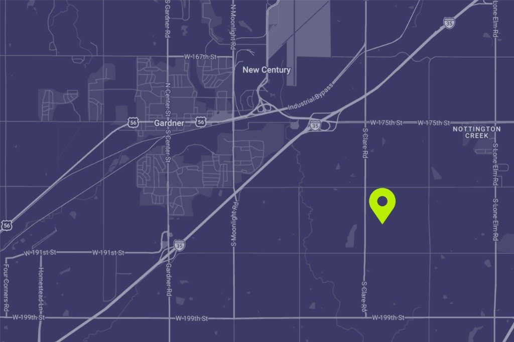

What they want to build here
About 300 acres of southeast Gardner could become a huge data center campus.
Where it is
The site is roughly 300 acres southeast of Gardner, near 191st and South Clare Road. It is farmland today and it is surrounded by homes. Evergy has already built a new electrical substation next to this corridor.

Usually, planners set industrial land back from houses using other zones or wide buffers. That cushion is missing here. The parcel is bordered by residential lots all around it. Neighbors share fence lines and sight lines, not distant skyline views of a plant far down the road.
The marketing website and map images can make the site feel farther from bedrooms and back porches than it really is. Many homeowners in the surrounding area will suffer real exposure: diesel exhaust during generator runs, chronic noise, light at night, and the stress that comes with living next to heavy industry.
Who is behind it
The name in public is Beale Infrastructure. Their Gardner page is bealeinfra.com/gardner-kansas.1
In practice, a local developer often holds the land while a much larger tech tenant runs the buildings. That tenant, not the sign at the gate, usually drives how fast the site grows, how much power and water it uses, and who shows up with lawyers if promises break.
Beale is already in litigation over another data center: a Beale subsidiary sued the Town of Marana, Arizona in a referendum dispute over a proposed project there, as documented by AZPM and other news outlets. Separately, the industry pattern is familiar: upscale promises on jobs and community benefit up front, while binding limits on noise, water, and cleanup often stay thin until late in the process. Smaller cities and rural edges get targeted because land reads as cheap and organized opposition is easier to outspend. The public website is marketing; it is not the same as signed development agreements or permit limits.
How big, and how long it takes
Beale describes a hyperscale campus: several buildings over many years and major spending.1 "Hyperscale" is industry talk for warehouse-sized computing for big cloud or AI operators.
Comparable sites in our region (for example De Soto or Edgerton) show how fast these projects can scale.2 Phase one is rarely the whole story. Later phases often carry most of the truck traffic, generators, and water demand. The limits that matter are in rezoning text, not on a "phase one" page of the marketing site.
A headline dollar figure usually describes a multi-year program, not one council vote. The ordinance text is the binding limit.
Electricity and the grid
These campuses use as much power as a small city. A big build can land in the hundreds of megawatts and climb toward a gigawatt when fully built. For scale, one megawatt is on the order of hundreds of homes using power at once by national averages.3 Evergy has already added substation capacity next door.
More power means more lines and substation work. The Kansas Corporation Commission (KCC) decides, through utility tariffs, how much of that bill hits the data center and how much is spread across regular families and small businesses on the same grid.4 Community groups in other states have pushed for rules that make the big customer pay for the grid it triggers.
Evergy and KCC filings are public. Tariff language is what allocates those costs.
In other towns, casual assurances that ordinary households will not share the cost of grid build-out did not survive a close read of the tariff docket. Thin or very late filings have tracked with surprises later.
Water
Beale has discussed closed-loop cooling near 15,000 to 20,000 gallons per day.1 That is far less than old-style cooling towers that can use huge amounts per day.5
Closed-loop is a design choice, not a permanent guarantee on its own. Operators can switch to thirstier cooling as they expand unless limits are locked into a development agreement or similar record. Any cooling system still needs makeup water, fire flow, and construction water. Water for this site would be supplied by WaterOne; added industrial draw still matters for system capacity and peak summer strain.
Daily caps, whether cooling type can change after approval, and worst-case daily demand under the rezoning belong in that written record, not on a marketing page alone.
A number on a website is not the same as a contract. Where cities skipped firm limits, operators have later switched to evaporative cooling towers or other open, water-heavy designs that use vastly more water than a closed loop. Those retrofits happen when load grows or chips run hotter; without a written cooling cap, the community only has the early press story.
Backup diesel and what neighbors breathe
Sites like this keep rows of diesel backup generators. Rules require regular testing (often monthly) and automatic runs when the grid flickers. KDHE air permits spell out counts, sizes, test hours, fuel storage, and pollution limits once filed.
Diesel exhaust carries fine soot (PM2.5) and nitrogen oxides. That fine soot is small enough to get deep in the lungs and into the bloodstream. It is linked to worse asthma, heart problems, and ER visits.8 Kids, older adults, and anyone with heart or lung disease face the highest risk.
Draft air permits, total generator capacity, and full test schedules sometimes arrive on a different timeline than the rezoning vote; other communities have seen final numbers only after local approval.
Utility air permits focus on mass emissions and compliance; for families nearby, the salient point is health. Diesel PM2.5 and other exhaust components worsen asthma and heart and lung disease especially in children, older adults, and people already sick. Regulated testing adds scheduled runs on top of any blackout, so exposure is not a one-off.
Noise
Huge fans and transformers produce a constant sound. Field measurements at running campuses have landed around 60 to 85 dBA at property lines, depending on gear and weather.6 For scale, 60 dBA is roughly normal conversation level; 70 is like a vacuum; 80 is like a garbage disposal, running nonstop.
Generator tests add sharp bursts of noise. Virginia and Arizona communities have fought these issues for years after saying yes.
For sleep, the World Health Organization points to quieter nights than many industrial sites deliver; long exposure above about 55 dB at night links to measurable health harm.7
Noise limits at the property line, generator test windows, and complaint channels vary by place and usually show up in permits or conditions when they are defined.
Industrial hum that never turns off is different from occasional road noise. Chronic noise at the property line tracks with disrupted sleep, stress, and cardiovascular strain in population studies. Generator tests add sharper peaks on top of that baseline.
Night lighting
Security and work lighting runs around the clock. From today’s dark rural yards, a lit industrial site shows up in bedroom windows and on porches year-round.
Bright night lighting can disturb sleep and wildlife. Mitigation options include fixtures that aim down, motion triggers, and warmer bulbs, but they only bind the project if they are written into conditions.
Lighting plans with lumen limits at the fence line, especially toward homes, sometimes appear in rezoning packages when a city requires them.
Glossy site drawings show tasteful uplighting; a lit equipment yard bounces glare into neighboring windows for years. Loss of a dark sky and light trespass are the lived version of the project for adjacent homes.
Day-to-day life at the fence line
When running, expect:
- Fan and cooling noise 24/7;
- Bright security lighting all night;
- Scheduled generator tests plus any real power outage;
- Steady vehicle traffic for fuel, service, and security with few desk jobs on site;
- Fencing, gates, and cameras as normal.
Years of construction on two-lane roads not designed for semi traffic
Buildout runs in phases over many years, not one short season. Each phase means heavy trucks, dust, vibration, night lighting for crews, and pile driving and crane noise on roads built for farm traffic, mostly on Johnson County roads around 191st and Clare.
Construction hours (including nights and weekends), haul routes, who pays for road wear, and dust and noise controls are the kind of detail that normally sits in the rezoning record or related agreements when they are spelled out.
"Temporary" here often means years. Counties have been stuck with road bills when nothing in writing tied the developer to pay.
Home values near big industry
Research on homes near heavy industry, big power lines, and large energy sites tends to show the same direction: nearby homes take a hit, strongest closest to the site and fading with distance. The exact percent varies by study.9
This page does not state a percentage change for Gardner without a local appraisal. Major rezonings elsewhere sometimes include an independent property impact study in the public file; whether one appears here depends on what the City requires.
When the campus winds down
Tech and power needs change. Facilities can wind down sooner than hoped, sit half idle, or leave cleanup for someone else.
Other industries use decommissioning bonds: money set aside up front to remove equipment and restore land. There is no good reason this use should skip that safeguard.
A bond requirement, and who pays if an owner walks away, would normally be addressed in zoning conditions or related agreements when a city chooses to require them.
Precedent: one “yes” makes the next approval easier
This vote is not only about one field. Planning boards look at what was already allowed nearby. If Gardner puts M-1 heavy industry against rural homes, the next application can argue the area is already industrial. That weakens the case for denying a similar project on the next parcel over, in unincorporated Johnson County, or at the edge of another city.
Metro edges sprawl outward this way on purpose or by drift; either way, the first approval changes the baseline for everything around it.
Sources
- Beale Infrastructure project page for the Gardner, Kansas site: bealeinfra.com/gardner-kansas
- Johnson County Post: coverage of recent multi-billion-dollar data center investments in nearby De Soto and Edgerton, Kansas. johnsoncountypost.com
- U.S. Energy Information Administration: average annual electricity consumption for a U.S. residential utility customer is approximately 10,500 kWh (≈ 1.2 kW average instantaneous demand). eia.gov FAQ: How much electricity does an American home use?
- Kansas Corporation Commission: utility rates, tariffs, and dockets are filed and reviewed publicly. kcc.ks.gov
- Lawrence Berkeley National Laboratory, "Center of Expertise for Energy Efficiency in Data Centers": overview of cooling water use and water-efficiency practices at data centers. datacenters.lbl.gov/water-efficiency
- Noise levels at and near hyperscale data center campuses have been documented in published reporting and community filings, including from Loudoun County, VA and Chandler, AZ. Reported continuous property-line measurements typically range from approximately 60 to 85 dBA depending on equipment design, terrain, and weather. See, e.g., reporting compiled at The Washington Post and local Loudoun County coverage.
- World Health Organization, "Environmental Noise Guidelines for the European Region" (2018): recommends nighttime road-traffic-equivalent noise levels below approximately 40 dB Lnight outside, and identifies sustained nighttime noise above ~55 dB as associated with adverse health effects. who.int
- U.S. Environmental Protection Agency, "Particulate Matter (PM) Pollution": health effects of PM2.5 exposure including cardiovascular and respiratory harm. epa.gov/pm-pollution
- Peer-reviewed studies of property-value impact near industrial and energy infrastructure include work published by Lawrence Berkeley National Laboratory and various academic journals. The direction of effect (a discount on nearby residential property) is consistent across studies; magnitudes vary with facility type and distance. See LBNL's body of work on energy infrastructure and property values: emp.lbl.gov